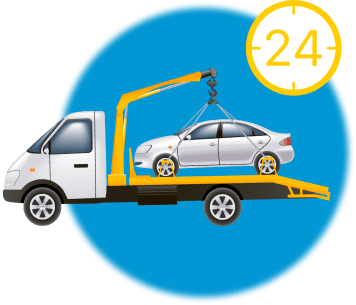

Здесь может быть ваш эвакуатор
Как вызвать эвакуатор в Москве дешево?
Поломка авто или ДТП – случайностей на дороге много. Решение одно – вызвать эвакуатор и доставить неисправный автомобиль на СТО/парковку или в гараж в Москве. С помощью онлайн-сервиса Эварус вы сможете заказать услугу эвакуатора в Москве (Московской области) максимально быстро и при этом сэкономить.
Мы предоставляем доступ к базе коммерческих и частных эвакуаторов Москвы. Это надежные компании, которые оперативно пришлют спецтехнику вам на помощь и обеспечат безопасную транспортировку авто.
Что нужно знать, чтобы заказать эвакуатор в Москве

Заказы на вызов эвакуатора в Москве перевозчики-партнеры «Тут Эвакуатор» принимают круглосуточно. Когда бы вы не позвонили, эвакуатор найдется всегда. Размещая заказ на эвакуатор, ознакомьтесь с информацией о транспортной компании, проконсультируйтесь с ее специалистами и выберите оптимальный вариант перевозки своего ТС.
Примите во внимание, что одни и те же виды эвакуаторов рассчитаны на транспортировку авто разных классов. Вопрос заключается лишь в том, какой тип эвакуатор будет выгоднее задействовать в вашем случае. Следуя рекомендациям перевозчика, вы сможете недорого эвакуировать авто как в Москве, так и в области.
Что входит в стоимость перевозки эвакуатором
Стоимость эвакуации включает в себя оплату услуг по погрузке, перевозке и выгрузке авто, а также по подаче эвакуатора в пункт дислокации ТС в Москве.
При формировании цены перевозчики берут в расчет четыре аспекта:
Грузоподъемность эвакуатора
Чем мощнее эвакуатор, тем дороже обходится ее эксплуатация, ем внушительнее будет сумма к оплате эвакуации
Предполагаемый пробег
Учитывается удаленность стоянки эвакуатора от местоположения ТС, расстояние между пунктами погрузки в Москве и выгрузки авто
Дополнительное оборудование
При эвакуации машин с серьезными поломками перевозчики оснащают эвакуатор вспомогательными приспособлениями, что закономерно отражается на стоимости транспортировки.
Уровень сложности
При значительном повреждении автомобиля погрузочно-разгрузочные работы усложняются. Они требуют подключения водителя-оператора высокой квалификации
Преимущества онлайн-сервиса ТутЭвакуатор.Ру
ТутЭвакуатор.Ру — это удобный сервис для тех, кому нужно недорого и быстро перевезти авто с техническими неисправностями или же с повреждениями, полученными при ДТП в Москве.
Воспользовавшись ТутЭвакуатор.Ру, вы сможете:
- получить постоянный доступ к базе надежных перевозчиков Москвы — сервис работает всегда, вне зависимости от воскресных/праздничных дней
- заказать эвакуатор круглосуточно — 24/7
- выбрать самое экономически выгодное предложение — цены на эвакуационные услуги рыночные, разница может быть ощутимой
- договориться с транспортной компанией напрямую — без посредников и комиссионных
- осуществить эвакуацию авто недорого — без скрытых платежей, неучтенных расходов
- вызвать эвакуатор в срочном порядке — охвачена Московская область, стоянки спецтехники базируются во многих районах Москвы, подача выполняется оперативно
Как оплатить заказ на эвакуатор
Услуги по эвакуации вы оплачиваете непосредственно исполнителю — транспортной компании, взявшейся за перевозку вашего ТС. Оплата производится по завершении эвакуации, после выгрузки авто в конечной точке в Москве. Формы оплаты стандартные для Москвы: наличный/безналичный расчет или банковский перевод. Эварус не взимает комиссионные с клиентов за пользование сервисом.
Как скоро прибудет эвакуатор
При оформлении заказа перевозчик сообщит вам расчетное время прибытия эвакуатора в точку погрузки авто. Как правило, в Москве это происходит в течение 10-15 мин., но зависит от загруженности дорог Москвы и погодных условий. Перевозчик, принявший заказ, будет информировать вас о наличии дорожных пробок и возможной задержке подачи эвакуатора. Автопарки наших партнеров находятся во многих районах Москвы, поэтому мы рекомендуем вам выбрать ближайший эвакуатор, чтобы ускорить процесс транспортировки авто.
Какой вес может взять на борт эвакуатор
Эвакуатор используют для перевозки всех видов автотранспорта: от небольших квадроциклов до габаритных коммерческих авто. Эвакуатор способен транспортировать автомобили до 8 т.
Виды эвакуаторов, доступные для заказа на ТутЭвакуатор.Ру:
Чтобы выбрать эвакуатор с необходимыми техническими параметрами и минимизировать расходы, при вызове эвакуатора следует указать:
- марку, модель, год выпуска и полную массу авто
- характер неисправности ТС
- состояние ходовой части, трансмиссии, рулевого управления
- адрес подачи эвакуатора и пункт конечного назначения в Москве
- наличие ключей от авто и документов, подтверждающих право на управление ТС (водительские права, техпаспорт и доверенность, если вы не собственник авто)
Как эвакуировать авто с заблокированными колесами
При помощи сервиса ТутЭвакуатор.Ру вы сможете вызвать эвакуатор в экстренных ситуациях, например, когда колеса авто заблокированы или ходовая ТС критически пострадала в результате аварии.
Перевозка автомобиля с заблокированными колесами возможна несколькими типами эвакуаторов:
- Эвакуатор с манипулятором. На ТС устанавливают четыре колесных захвата, закрепленных на широких текстильных стропах. С помощью специальных петель оператор манипулятора регулирует длину строп, чтобы при перемещении на эвакуатор авто не кренилось. Стропы присоединяют к линейной или H-образной траверсе. Кран-манипулятор подхватывает траверсу за проушину, поднимает автомобиль и загружает на платформу эвакуатора.
- Эвакуатор с гидроплатформой (без аппарелей) и лебедкой. Авто приподнимают домкратом, под заблокированные колеса устанавливают подкатные тележки. При помощи лебедки авто затягивают на наклонную платформу эвакуатора. После этого платформу эвакуатора приводят в горизонтальное положение.
Стоимость вызова эвакуатора для перевозки авто
На сайте Эварус представлены цены, выставленные перевозчиками за стандартную услугу эвакуации авто по Москве и области. Начальная стоимость транспортировки зависит от габаритов и веса ТС: перевозка мотоцикла/малолитражки будет стоить дешевле, чем внедорожника/минивена. Дороже всего обойдется эвакуация неисправной спецтехники и грузового транспорта.
На стоимость услуги эвакуатора в Москве влияет ряд факторов:
- класс, масса, степень повреждения транспортируемого авто
- первоначальное месторасположение ТС в Москве и дальность следования
- сложность погрузочно-разгрузочных операций
- дорожные и погодные условия Москвы
Окончательная цена зависит от того, куда подавать эвакуатор и где впоследствии выгружать автомобиль: Москва это будет или Московская область. Транспортировка по МО оплачивается согласно прайсу, плюс тариф за каждый км пробега от МКАД. Суммарная оплата увеличится, если машина находится в кювете/яме/гараже/водоеме и подъезд к ней усложнен. Стоимость возрастет и при наличии заблокированных колес/рулевого управления или серьезного повреждения ТС. Все нюансы эвакуации авто вы сможете обсудить с перевозчиком. Ознакомившись с конкретной ситуацией, он озвучит цену и сроки подачи эвакуатора.
В каких случаях возможно изменение стоимости услуги после прибытия эвакуатора к месту погрузки авто:
- простой эвакуатора по вине клиента
- смена маршрута после размещения заказа
- непредвиденное усложнение эвакуации из-за неправильных/неполных данных о ТС
Во избежание незапланированных трат, сообщите диспетчерской службе подробные сведения о своем автомобиле и обстоятельствах его поломки.
Стоимость вызова эвакуатора для перевозки авто
Воспользовавшись онлайн-ресурсом Эварус, вы сократите время на поиск эвакуатора в Москве, МО и закажете услугу по оптимальной цене. Вам не придется обзванивать знакомых или долго искать телефон эвакуатора в интернете. Проанализируйте предложения на нашем сайте, выберите лучшие условия и стоимость перевозки.
Как вызвать эвакуатор с помощью онлайн-сервиса ТутЭвакуатор.Ру:
- Ознакомьтесь с картой Москвы и Московской области, на которой желтыми маркерами обозначены стоянки эвакуаторов.
- Увеличьте масштаб и определите, какой из адресов находится рядом с местом вашей дислокации
- Выберите ближайший эвакуатор и нажмите на соответствующий маркер
- Просмотрите детальную информацию о перевозчике: возможные способы погрузки ТС, комплектацию автопарка, типы транспортируемых авто прайс с ценами
- Кликните по голубому полю внизу карточки перевозчика и возьмите телефонный номер компании
- Созвонитесь с диспетчером фирмы, обсудите детали эвакуации в Москве/МО и стоимость заказа
- Сравните цены и условия перевозки у нескольких компаний, выберите наиболее подходящий для себя вариант